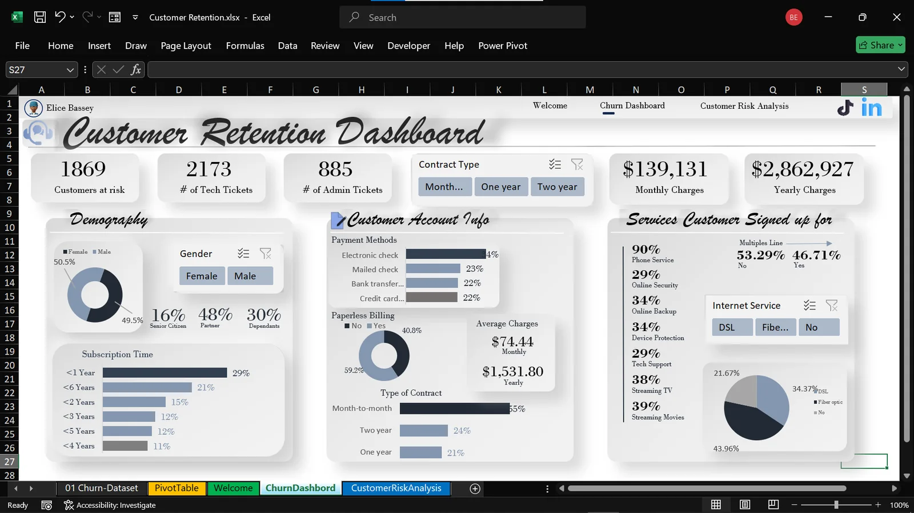
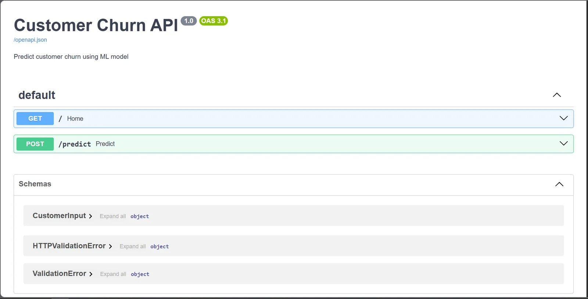

The problem I set out to solve
Retention teams in telecom mostly work reactively: a customer calls to cancel, and only then does anyone try to keep them. The dataset I worked with describes 7,043 customers of a telecom provider across 21 attributes: who they are, what services they take, how long they have stayed, what they pay, and whether they left.
The question I wanted the data to answer is the one a retention budget depends on: who is most likely to churn next, and are they even worth the outreach cost? Not every departing customer is equal. A month-to-month customer paying $74 a month for four months is a different problem from a two-year customer paying $118 a month for six years.
So I split the work in two. A prediction model that scores every customer's churn probability, and an executive dashboard that shows where the risk lives in the business. The dashboard has its own case study on this site; this page is the model and the money.
The short answer
The churn in this data is not a mystery: it concentrates in a handful of segments that are visible long before anyone needs a model. Month-to-month customers churn at 42.7% against 2.8% for two-year contracts, a 15-fold difference. Fiber optic customers churn at 41.9% against 19.0% on DSL. Electronic-check payers churn at 45.3% against 15.2% on automatic credit card. The 1,869 customers who churned carry $2.86M of lifetime billing, and the churned segment bills $74.44 a month on average against $64.76 for everyone else, so the people leaving are the ones paying the most. The model's job is to turn those segment facts into an individual score: my logistic regression reaches a test ROC-AUC of 0.858, meaning it ranks a random churner above a random non-churner about 86 times out of 100, and a retention team can work the ranked list top-down.

Numbers at a glance
Where they come from: the dataset figures are from my direct profile of the CSV, and the model scores are from an exact re-run of my training pipeline, the same code as my Churn.py, which reproduced the cross-validation and test results my README reports. Both pages of this case study only carry numbers I can regenerate on demand.
How to read each number
| Number | How I got it | How to read it |
|---|---|---|
| 0.858 test ROC-AUC | Scoring my final model on the 1,409-customer hold-out | A ranking quality, not an accuracy. It says a random churner gets a higher score than a random retained customer 85.8% of the time. My README sometimes calls this 85.8% accuracy; the precise claim is the ranking one. |
| 0.842 +/- 0.007 | Five-fold cross-validation on the 5,634-customer training set | The tight spread across folds matters more than the level: the model is not riding one lucky split. |
| 42.7% vs 2.8% | Churn rate by contract type, computed on the raw data | The single strongest pattern in the dataset. Contract type is the closest thing this problem has to a ground truth. |
| 45.3% e-check churn | Churn rate within the electronic-check payment segment | Process friction behaves like a churn driver in its own right, at nearly three times the automatic-payment rate. |
| $74.44 vs $64.76 | Average monthly bill, churned group versus the full base | The customers who leave are above-average payers, which is why churn here is a revenue problem and not just a count. |
| $2.86M | Total lifetime charges billed to the 1,869 churned customers | What those customers were worth across their whole stay. My dashboard labels this Yearly Charges; the precise reading is cumulative lifetime billing, and their monthly run-rate is $139,131. |
What I found
Contract type is the ground truth of this problem
What separates the customers who leave from the ones who stay?
I cut the churn rate by every dimension in the dataset, and nothing comes close to contract type. Month-to-month customers churn at 42.7%, one-year customers at 11.3%, two-year customers at 2.8%. That is a 15-fold spread between the extremes, and it dwarfs every demographic effect in the data.
It also makes business sense rather than just statistical sense: a customer with no term commitment can leave in any billing cycle, so the observed rate is the natural consequence of the contract structure. Two-year customers churn at 2.8% not because they are loyal by temperament but because leaving costs them something.
The practical translation is uncomfortable but useful: the biggest retention lever in this data is not a model, it is moving customers onto term commitments. The model's value is telling you which month-to-month customers to convert first.
What it means. When one variable dominates this hard, the intervention design should start from it rather than from a blended risk score.
Treat month-to-month contracts as the primary targeting criterion, and use the model score to rank within that segment.
The services customers do not take are the ones that predict leaving
Does service adoption mark the at-risk segment?
Add-on service adoption runs 29% for online security, 34% for online backup, 34% for device protection and 29% for tech support, against 90% phone-service uptake. The protective add-ons are the least-adopted services in the base.
Internet type cuts the same way: fiber optic customers churn at 41.9% while DSL customers churn at 19.0%, and customers with no internet service at all are the most stable of all at 7.4%. The premium, high-expectation product churns hardest; the plain, reliable one holds.
My reading is that the low-adoption numbers are an engagement signal, not a service-quality finding. A customer who buys only the core product has fewer ties to the provider and fewer moments of perceived value, and the fiber pattern says expectations outran delivery at the premium tier.
What it means. Service adoption and internet type behave like leading indicators you can read from billing data alone, months before a cancellation.
Use low add-on adoption plus fiber as the profile to prioritise, and test bundling as the retention offer.
Payment friction is a churn signal hiding in a billing field
Can a mundane account field carry risk information?
Payment method looks like the dullest field in the dataset, and it produces one of the sharpest splits: electronic-check payers churn at 45.3%, while automatic bank-transfer and credit-card payers churn at 16.7% and 15.2%. Mailed checks sit at 19.1%.
That is nearly a three-fold difference inside an account attribute nobody would call strategic. One plausible mechanism: automatic payment removes a monthly moment where cancelling is easy, while a manual e-check keeps the customer doing effortful billing work every cycle.
I verified the mix too: electronic check is 34% of the payment field while every automatic method is about 22%, so the high-risk group is also the largest single payment segment, not a fringe.
What it means. Operational friction fields can carry as much signal as satisfaction scores, and they are free to collect.
Move e-check customers to automatic payments as a low-cost retention play, and watch whether churn follows.
The customers who leave are the ones paying the most
Is churn here a volume problem or a revenue problem?
The churned segment bills $74.44 per month on average against $64.76 across the full base, so the leavers are about 15% above-average payers. Their cumulative lifetime billing totals $2.86M across the 1,869 customers, an average of $1,532 each.
On a monthly basis the churned segment was a $139,131 run-rate, roughly $1.67M a year if it had held. That is the honest revenue-at-stake number; the $2.86M figure is what those customers had already paid over their whole stay, which is why my dashboard's Yearly Charges label needed this clarification.
The tenure side completes the picture: 29.4% of all customers are inside their first 12 months, and my dashboard's subscription-time panel shows the risk window is front-loaded, before contracts and habits settle.
What it means. Churn concentrated among above-average payers inside the first year makes the revenue exposure much larger than the customer count suggests.
Weight retention priority by monthly billing as well as churn probability, and front-load interventions into the first year.
The model turns segment facts into an individual score
Is a model actually needed when the segments are this visible?
Fair challenge: with contract type and payment method this predictive, a simple segment table gets a team most of the way. What the model adds is the individual ranking inside the noisy middle, where a customer has a mix of signals: month-to-month but two years of tenure, fiber but automatic payment, low add-ons but a partner on file.
My logistic regression uses 19 features: three numeric (tenure, monthly and total charges) and sixteen one-hot encoded categoricals, trained with 5-fold cross-validation on ROC-AUC. Cross-validation lands at 0.842 with a standard deviation of 0.007, and the held-out test set scores 0.858, so generalisation is real rather than a split artefact.
I chose logistic regression deliberately over a flashier classifier: every coefficient is inspectable, the probability is calibrated enough to threshold, and the whole pipeline trains in seconds, which matters when a retention team wants monthly rescoring, not a research project.
What it means. The model is the ranking layer on top of segment knowledge, and a simple, inspectable one is a feature for a business process, not a compromise.
Deploy the score as a ranked worklist for the retention team, led by month-to-month customers.

What I would do next
Work the ranked list top-down, not the whole base
High priority- Evidence
- 1,869 churned-profile customers at $139,131 monthly billing, and contract type separating churn risk by 15-fold.
- What to do
- Score the base monthly, start outreach at the top of the ranked list among month-to-month customers, and stop treating the 26.5% at-risk share as one undifferentiated pool.
- What I expect
- Puts limited retention budget where the contract structure and the score both say the risk is.
Make contract conversion the primary offer
High priority- Evidence
- 42.7% month-to-month churn versus 2.8% on two-year terms, the strongest pattern in the data.
- What to do
- Lead with term-conversion incentives for high-scoring month-to-month customers before discounting or upgrades.
- What I expect
- Attacks the mechanism the data actually shows, instead of the symptoms around it.
Migrate e-check payers to automatic payments
Medium priority- Evidence
- 45.3% churn among electronic-check payers against 15.2% to 16.7% for automatic methods, on a 34% share of the base.
- What to do
- Run a migration campaign for e-check customers with a small incentive, and measure churn in the migrated cohort against a hold-out.
- What I expect
- A cheap, testable intervention on the single most friction-heavy segment.
Bundle the low-adoption protective services
Medium priority- Evidence
- Tech support and online security adoption both at 29% against 90% phone-service uptake, with fiber churn at 41.9%.
- What to do
- Package security and support add-ons into the fiber pitch for new and at-risk customers, and track adoption as the leading indicator it behaves like.
- What I expect
- Raises the engagement signals that precede churn, on the tier that churns hardest.
Rebuild the API's input contract to match the model
Low priority- Evidence
- My served /predict endpoint accepts 4 fields while the model was trained on 19, so missing features silently default to zero.
- What to do
- Expand the CustomerInput schema to the full 19-feature contract before any real integration leans on the API.
- What I expect
- Removes a silent-accuracy gap between the validated model and the served one.
Improve the model's weakest records honestly
Low priority- Evidence
- The 11 blank totalcharges rows were filled with 0, which distorts brand-new customers the model most needs to score well.
- What to do
- Impute from tenure-based expectations rather than zero, and re-validate; also tune the 0.5 threshold against the actual cost of a wasted offer versus a lost customer.
- What I expect
- Tightens exactly the low-tenure edge of the score where the money concentrates.
What this can't tell you
The dataset is the public Kaggle telco churn table. It is real-world-shaped and widely benchmarked, but it describes one provider at one snapshot, so the coefficients belong to this table rather than to telecom in general.
ROC-AUC 0.858 is a ranking quality. It does not say the model is right about any individual customer, and the classes are imbalanced 74/26, so a raw accuracy number would flatter it. Ranking is the honest metric here.
The churn causes are inferred, not observed. The dataset has no cancellation interviews, so e-check friction and fiber expectation gaps are readings of patterns, not documented reasons.
The revenue projections in my README ($420K to $1.26M saved, ROI scenarios) are business-case modelling with stated assumptions, not measurements. They assume retention offers convert at 40 to 50% and each save is worth about $1,400 a year. Treat them as a frame for the decision, not as results.
The served API currently scores on 4 of the 19 features the model trained on; predictions through it are not the validated model's output. I say that plainly rather than letting the Swagger page imply otherwise.